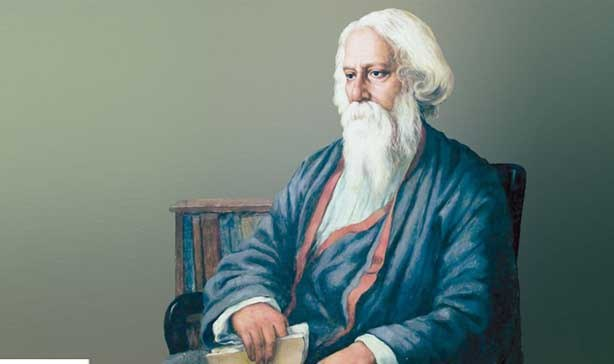
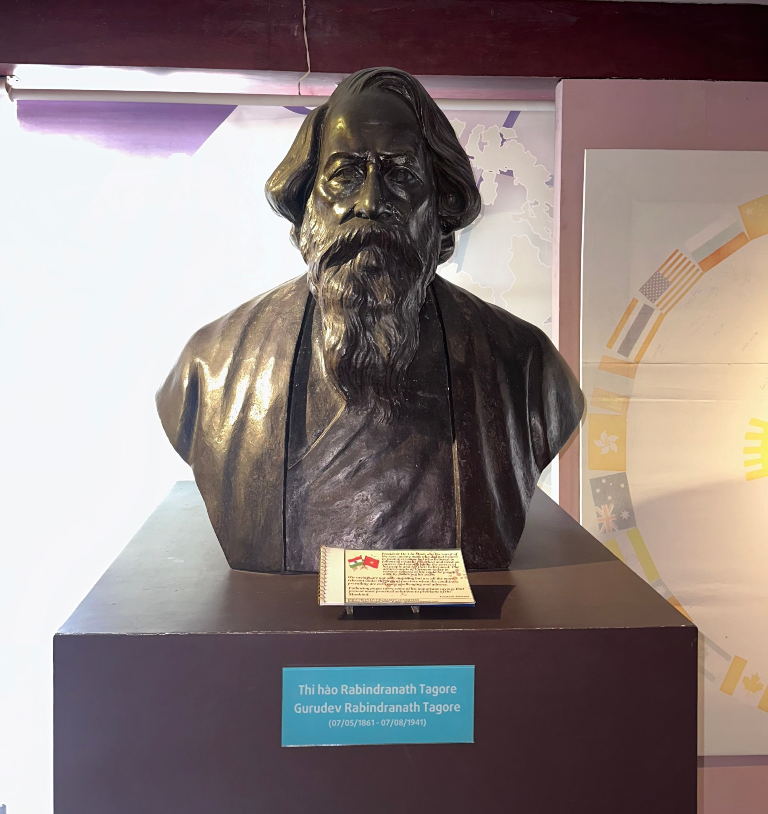
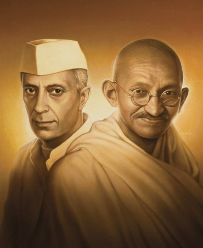

Trong bài
Giữa không gian trưng bày về văn học Việt Nam, hình ảnh Rabindranath Tagore – nhà thơ lớn của Ấn Độ – có thể khiến nhiều du khách bất ngờ. Vì sao một nhà văn nước ngoài lại hiện diện tại đây? Đằng sau bức tượng Tagore là câu chuyện về văn chương, tư tưởng và những cuộc gặp gỡ vượt qua biên giới quốc gia.
Tagore là ai và vì sao ông có vị trí đặc biệt?
Rabindranath Tagore là một trong những tên tuổi lớn của văn học thế giới. Sinh năm 1861 tại Calcutta, Ấn Độ, ông được biết đến với nhiều vai trò: nhà thơ, nhà văn, nhà triết học, nhà giáo dục, nhạc sĩ và họa sĩ. Những sáng tác của ông thể hiện sự quan tâm sâu sắc đến con người, thiên nhiên, tình yêu, tự do và đời sống tinh thần.

Tên tuổi Tagore gắn liền với một dấu mốc quan trọng của văn học châu Á khi ông trở thành người châu Á đầu tiên nhận Giải Nobel Văn học vào năm 1913. Giải thưởng được trao cho tập thơ Gitanjali (Lời dâng), đưa tiếng nói văn chương từ phương Đông đến gần hơn với độc giả thế giới.
Điều đáng chú ý là Tagore không chỉ được biết đến bởi một giải thưởng. Giá trị trong sáng tác của ông nằm ở khả năng kết hợp giữa chiều sâu tư tưởng và cảm xúc giàu tính nhân văn. Thơ ông thường hướng con người đến sự hòa hợp với thiên nhiên, tình yêu thương và khát vọng tự do.
Trong lịch sử văn học Ấn Độ, Tagore vì thế được xem là một nhân vật có ảnh hưởng đặc biệt. Ông vừa kế thừa truyền thống văn hóa phương Đông, vừa tiếp nhận nhiều tư tưởng mới trong quá trình giao lưu với thế giới.
Chính vị trí ấy giúp hình ảnh ông vượt ra khỏi phạm vi của một nền văn học riêng biệt. Tagore trở thành một đại diện tiêu biểu cho khả năng đối thoại của văn chương giữa các nền văn hóa.
Vậy điều gì khiến một nhà thơ Ấn Độ xuất hiện trong không gian dành cho văn học Việt Nam? Câu trả lời nằm ở chính tinh thần mà một bảo tàng văn học hướng tới: văn chương không bị giới hạn bởi đường biên địa lý.
Tagore trong không gian văn học Việt Nam: Một cuộc gặp gỡ vượt biên giới
Sự xuất hiện của Tagore tại Bảo tàng Văn học không nên được hiểu đơn giản là việc đưa thêm một nhân vật nước ngoài vào không gian trưng bày. Đằng sau đó là một cách nhìn rộng hơn về lịch sử văn chương.

Văn học của mỗi quốc gia đều có những đặc điểm riêng, nhưng các nền văn học chưa bao giờ tồn tại hoàn toàn biệt lập. Những tư tưởng, hình thức nghệ thuật và tác phẩm luôn có khả năng vượt qua biên giới để tìm đến những độc giả mới.
Văn học Việt Nam cũng nằm trong dòng chảy ấy. Trong quá trình phát triển, văn học Việt Nam đã có nhiều tiếp xúc với các nền văn hóa khác nhau. Những cuộc giao lưu ấy góp phần mở rộng cách con người nhìn nhận về thế giới, về xã hội và về chính mình.
Ở góc nhìn đó, sự hiện diện của Tagore trở thành một dấu hiệu của giao lưu văn hóa. Ông đại diện cho một nền văn học châu Á có truyền thống lâu đời, đồng thời cho thấy tiếng nói của văn chương phương Đông hoàn toàn có thể bước ra thế giới bằng những giá trị mang tính phổ quát.
Từ Ấn Độ đến Việt Nam qua con đường văn chương
Có một điểm đáng chú ý trong sáng tác của Tagore: dù bắt nguồn từ đời sống và văn hóa Ấn Độ, nhiều vấn đề ông đặt ra lại không xa lạ với độc giả ở những quốc gia khác.
Tình yêu, gia đình, thiên nhiên, con người, tự do và khát vọng sống là những chủ đề không thuộc riêng một dân tộc nào. Một độc giả Việt Nam có thể tìm thấy trong thơ văn Tagore những cảm xúc quen thuộc, dù được diễn đạt từ một nền văn hóa khác.
Đó chính là sức mạnh của văn chương. Một tác phẩm có thể được viết ở một vùng đất, bằng một ngôn ngữ và trong một thời đại cụ thể, nhưng vẫn có khả năng chạm đến những người sống cách nó hàng nghìn kilomet. Tagore là một minh chứng rõ nét cho khả năng ấy.
Khi đặt ông trong không gian của văn học Việt Nam, bảo tàng không chỉ kể câu chuyện về một cá nhân. Không gian ấy còn gợi mở một câu hỏi rộng hơn: văn chương Việt Nam đã và đang đứng ở đâu trong dòng chảy văn học của khu vực và thế giới?
Tagore, Gandhi và Nehru: “Tam vị nhất thể” của một thời đại
Một điểm đặc biệt trong không gian trưng bày là hình ảnh Tagore được đặt trong mối liên hệ với Mahatma Gandhi và Jawaharlal Nehru, tạo thành hình tượng thường được gọi là “Tam vị nhất thể”.

Ba nhân vật thuộc những lĩnh vực và có những con đường hoạt động khác nhau, nhưng đều có ảnh hưởng sâu rộng đến đời sống tinh thần và lịch sử Ấn Độ trong thế kỷ XX.
Nếu Gandhi gắn với tư tưởng chính trị và phong trào đấu tranh giành độc lập, Nehru gắn với hoạt động chính trị và quá trình xây dựng Ấn Độ hiện đại, thì Tagore nổi bật ở lĩnh vực văn chương, giáo dục và tư tưởng.
Sự đặt cạnh nhau ấy giúp người xem hiểu rằng văn học không tồn tại tách biệt khỏi đời sống xã hội. Một nhà văn có thể không trực tiếp hoạt động chính trị, nhưng những tư tưởng về con người, tự do, giáo dục và xã hội trong tác phẩm vẫn có khả năng tác động đến cách một thời đại suy nghĩ.
Nhìn văn học Việt Nam từ một không gian rộng hơn
Sự hiện diện của Tagore cũng giúp người xem có thêm một góc nhìn để tiếp cận văn học Việt Nam.
Khi đứng trước những hiện vật về các nhà văn Việt Nam rồi bắt gặp hình ảnh một nhà thơ Ấn Độ, người xem có thể nhận ra rằng văn học dân tộc luôn tồn tại trong một không gian rộng lớn hơn.
Mỗi nền văn học đều có bản sắc riêng, nhưng sự giao lưu với thế giới giúp những giá trị ấy được nhìn nhận từ nhiều góc độ. Một tác phẩm chỉ thực sự có sức sống lâu dài khi nó vừa giữ được căn tính văn hóa của mình, vừa có khả năng đối thoại với những giá trị bên ngoài.
Theo cách đó, hình ảnh Tagore không làm cho không gian văn học Việt Nam trở nên “xa” hơn. Ngược lại, nó mở rộng không gian ấy, đưa câu chuyện về văn chương Việt vào một bức tranh lớn hơn của văn học châu Á và thế giới.
Sự xuất hiện của Tagore giữa không gian văn học Việt Nam không phải một sự sắp đặt ngẫu nhiên. Đó là câu chuyện về giao lưu văn hóa, về sức mạnh vượt biên giới của văn chương và về cách một nền văn học có thể đối thoại với thế giới. Từ hình ảnh Tagore, người xem có thêm một góc nhìn để khám phá văn học Việt Nam trong dòng chảy rộng lớn của văn học nhân loại.
Bảo tàng Văn học Việt Nam